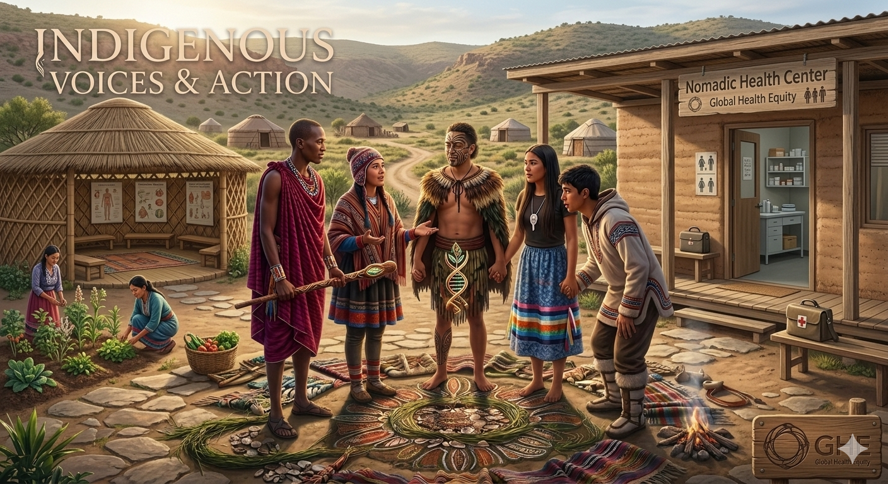

01
Explore
Discover why stories, lived experience and community knowledge matter in health.
Start here →Meaningful learning begins by listening. Indigenous voices, knowledge, stories and leadership can help us understand health in ways that statistics alone cannot.
Listen with respect. Learn with humility. Question what you hear. Then turn understanding into thoughtful action.

Health is not only something measured about people. It is also something understood, experienced and defined by people and communities.
Listening to Indigenous voices helps us understand priorities, strengths, experiences and aspirations that may not be visible in conventional datasets.
It also reminds us that global health leadership is not about speaking for communities. It is about creating conditions in which people can speak for themselves and have their voices heard and respected.
Listening does not mean simply hearing words. Ask yourself: Am I listening without rushing to judge? Am I trying to understand the speaker's context? Am I making space for another person's knowledge?
This final pathway page brings the journey from understanding toward voice, leadership and respectful action.
Discover why stories, lived experience and community knowledge matter in health.
Start here →Explore Indigenous leadership, knowledge, storytelling and community-led approaches to health.
Learn more →Question whose knowledge is valued, whose evidence is visible and whose voice may be missing.
Think deeper →Connect listening and leadership with family, community, country and the wider world.
Make connections →Consider how your own position influences what you hear, believe and choose to do.
Reflect →Turn respect and understanding into meaningful, age-appropriate action.
Take action →A story is more than information. It comes from a person, a community, a place and a history.
Indigenous storytelling can carry knowledge across generations. Stories may communicate relationships with land, community, identity, history, responsibility and wellbeing.
When we encounter an Indigenous story, we should not immediately turn it into a generalized lesson about "Indigenous culture." Instead, we should first understand the community and context from which the story comes.
Community leadership brings knowledge, priorities, experience and responsibility together.
Indigenous leadership can take many forms. It may involve Elders and knowledge keepers, community leaders, health professionals, educators, researchers, youth, families and many others.
Community-led approaches are important because solutions are more meaningful when the people affected by a health issue have genuine influence over decisions.
People should have opportunities to express their experiences, priorities and aspirations.
Community and Indigenous knowledge can contribute important understanding of health and wellbeing.
Leadership includes the ability to influence decisions and shape solutions.
Knowledge becomes powerful when it supports respectful and meaningful action.
Evidence is powerful—but evidence is also produced, interpreted and used within systems of knowledge and power.
Global health often relies on quantitative measures: mortality, morbidity, service coverage, income, education and many other indicators.
These measures are valuable. But numbers may not capture every dimension of wellbeing, cultural continuity, identity, belonging or community experience.
A strong global health explorer therefore asks not only "What does the data say?" but also: "Whose knowledge and experience are represented?"
Respectful evidence combines critical inquiry with respect for knowledge, experience and context.
Listening and evidence are not opposites. They can strengthen one another when communities participate meaningfully in defining questions and interpreting findings.
Respectful action grows through relationships—from what we learn personally to what we contribute collectively.
Listen to yourself. Examine your assumptions and position.
Share learning and practice respectful dialogue.
Support spaces where different voices can be heard.
Understand rights, policies, institutions and equity.
Contribute to global movements for health equity and justice.
The ability to participate in decisions affecting one's life is closely connected to equity and wellbeing.
Health action therefore includes more than services. It can include strengthening belonging, opportunity, participation, cultural continuity and self-determination.
Indigenous voices and leadership connect directly with global commitments to health, education, equality, justice and inclusive institutions.
Good leaders do not need to have every answer. They need to know when to listen, when to question, when to learn and when to support others to lead.
Understand priorities and context before deciding what a community "needs."
Leadership includes creating opportunities for others to participate and influence decisions.
Recognize that knowledge can come from research, experience, community practice and cultural traditions.
Responsible action means considering consequences, respecting commitments and remaining open to learning.
Before moving to action, pause and consider how you participate in conversations about Indigenous health.
Do I listen to understand, or am I already preparing my response?
Whose voices do I usually hear when I learn about health and society?
What is one respectful action I can take after completing this pathway?
Action does not always mean doing something large. Sometimes it begins with learning accurately, correcting a stereotype, listening carefully, supporting Indigenous leadership or creating a more respectful conversation.
Return to the Pathway